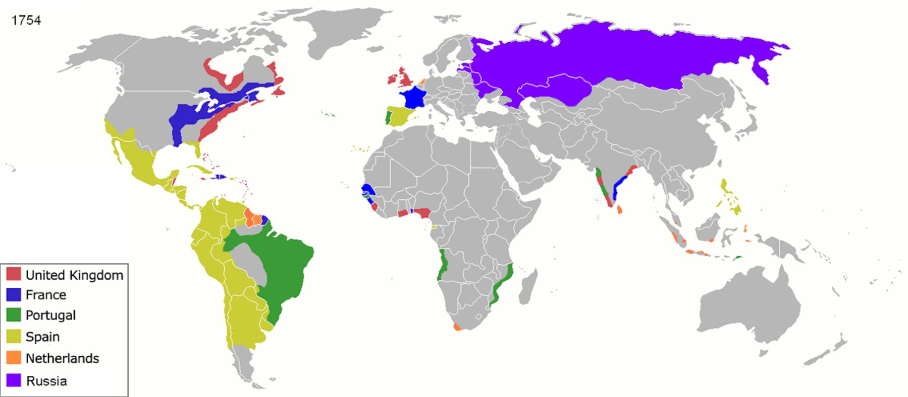

4.8 Continuity and Change from 1450 to 1750
- LO-A: Purpose of this topic: Topic 4.8 is a synthesis topic. There is no new content, instead, the AP exam asks you to use the historical thinking skill of argumentation to draw on the key concepts and historical developments from Units 4 (and earlier units) to analyze what changed and what stayed the same across the period 1450–1750. The LO is about how economic developments affected social structures over time, connecting the commercial changes (maritime empires, Atlantic trade, silver economy) to the social changes (new labor systems, new hierarchies, demographic shifts). Major changes: Permanent contact between Eastern and Western Hemispheres (ending 12,000 years of biological isolation); Columbian Exchange (reshaping global diets, populations, and ecologies); new European maritime empires in Americas and Indian Ocean; new Atlantic labor systems (chattel slavery, encomienda); new social hierarchies (casta system, Qing ethnic hierarchy); global silver economy connecting Americas, Europe, and Asia for the first time. Major continuities: Agriculture remained the economic foundation for most of humanity; existing land-based empires (Mughal, Ottoman, Qing, Safavid, covered in Unit 3) continued operating; Indian Ocean trade networks persisted despite European disruption; hierarchical social organization continued everywhere, though the specific hierarchies changed; most people worldwide were still peasants, though often working harder for global markets. The AP skill: The exam will test your ability to make and support an argument about the extent of change vs. continuity. A strong thesis doesn't just list changes or continuities. It makes a judgment: "change was more significant than continuity" or "continuity was more significant in [domain X], while change dominated in [domain Y]." The evidence from all of Unit 4 (and connecting to Unit 3) supports these arguments.
Try each question before revealing the answer.
1. A historian argues: "The period 1450–1750 represents a fundamental break in world history, nothing before this period remotely resembles what came after." What is the strongest evidence for this claim, and what evidence challenges it?
2. The learning objective for this topic asks specifically how "economic developments" affected "social structures." Using three examples from Unit 4, trace this economic-to-social causation.
3. An AP World History essay prompt asks you to "evaluate the extent to which the period 1450–1750 saw continuity in economic systems." What is a stronger thesis, one that argues for significant continuity, or one that argues for significant change? Make the case for whichever you find more defensible.
4. Compare the economic effects of Unit 4 (1450–1750) with the economic effects of the Mongol Empire covered in Unit 2. In what ways did the world's economic integration in 1450–1750 represent a continuation of patterns established in the Mongol era? In what ways was it a departure?
5. For this topic, the AP exam emphasizes three key concepts: KC-4.1 (transoceanic voyaging transformed trade and social life), KC-4.2 (major changes in labor, manufacturing, gender structures, and environment), and KC-4.3 (empires achieved increased scope). How do these three key concepts work together to produce a coherent historical argument about the period 1450–1750?
- Explain how economic developments from 1450 to 1750 affected social structures over time, using the argumentation skill to make and support a claim about the extent of change and continuity

Image credit not specified.
The world in 1600: for the first time in history, all the world's major regions were connected by regular maritime trade. Spanish galleons crossed both oceans, Portuguese ships commanded the Indian Ocean, and Ottoman caravans linked land and sea routes. What changed in this period was the scale and speed of global connection, what stayed the same was that most people still lived as peasant farmers under hierarchical empires. AI-generated illustration (Google Gemini, 2025), commercially licensed.
📊 What Changed, What Stayed the Same: A Master Table
Before writing an effective continuity and change over time argument, you need to have the evidence organized. Use this table as your synthesis reference for all of Unit 4:
💡 How to Write a Strong CCOT Argument
The learning objective for this topic asks you to "explain how economic developments from 1450 to 1750 affected social structures over time." This is a causation + change over time argument. Here's how to build one:
Step 1: Identify the economic development you'll focus on. The Atlantic trading system. The global silver economy. The plantation economy. Joint-stock companies. Each is a valid choice.
Step 2: Trace the specific social structural effect. Don't just list both, explain the causal mechanism. How did the plantation economy create chattel slavery? Why did global demand for silver intensify labor demands on Chinese artisans? What specifically connected Potosí silver to Chinese tax requirements?
Step 3: Specify the change over time. The effects of the Atlantic trading system were not identical in 1500 and 1750. They grew, intensified, and changed in character. The slave trade was in its early stages in 1500; by 1750 it had transported over 7 million people. This change over time within the period matters.
Step 4: Acknowledge what didn't change. A sophisticated CCOT essay acknowledges that some social structures persisted even as others changed. Agricultural labor remained the norm for most people; hierarchical social organization didn't disappear. It changed form.
🔗 Connecting Unit 4 to Units 3 and 5
AP World History is cumulative. Topic 4.8 is a good place to practice connecting Unit 4 to adjacent units:
Connection to Unit 3 (Land-Based Empires, 1450–1750): The Mughal, Ottoman, Safavid, and Qing empires covered in Unit 3 were the dominant political units of this period in terms of population and territory. European maritime empires were commercially impressive but governed far fewer people. The economic changes of Unit 4 (Atlantic trade, silver) occurred alongside and sometimes in tension with the land-based empires of Unit 3, the silver economy affected Mughal India and Qing China even though neither participated in Atlantic trade directly. Unit 3 provides the political context within which Unit 4's economic changes operated.
Connection to Unit 5 (Revolutions, 1750–1900): Unit 4's developments created the conditions for Unit 5. The criollo resentment of peninsular privilege (casta system) fed Latin American independence movements. The plantation economy's profits funded early industrialization in England. The Atlantic trading system's commercial networks provided the infrastructure for industrialization's global reach. The Columbian Exchange's demographic changes helped create the population growth that fueled both revolution and industrialization. Unit 4 is where modern global economic integration begins; Unit 5 is where its industrial acceleration occurs.
✏️ Practice Prompts for Argumentation Skill
The following prompts are drawn from the College Board's suggested skill focus for Topic 4.8 (Argumentation, skill 6.C: "Use historical reasoning to explain relationships among pieces of historical evidence"). Practice writing thesis statements and essay plans for each:
These videos will help you review Continuity and Change from 1450 to 1750 and solidify key concepts before your exam.
- A) European military superiority and deliberate policy of population replacement
- B) Climate change in the Americas reducing indigenous population and creating agricultural opportunities for enslaved African workers
- C) Disease transmission causing indigenous population collapse, creating labor demand that drove the Atlantic slave trade
- D) Voluntary migration of enslaved Africans to fill economic opportunities created by European colonization
- A) Land-based empires remained dominant in terms of population and territory despite the growth of European maritime power
- B) European maritime empires had displaced land-based empires as the dominant form of political organization by 1750
- C) Asian land-based empires had deliberately avoided participation in global trade networks to protect their political independence
- D) European commercial innovations made European states economically superior to all land-based empires by 1750
- A) The superiority of Andean agricultural methods over European farming traditions
- B) Deliberate Spanish colonial policy of improving European peasant nutrition
- C) How global trade connections in 1450–1750 disrupted traditional European agricultural systems
- D) The Columbian Exchange's beneficial effects on Afro-Eurasian populations through the transfer of American food crops
- A) European commercial expansion had successfully displaced indigenous Asian industries from global markets by 1750
- B) How global trade connections created through maritime expansion intensified existing Afro-Eurasian production and labor while leaving some indigenous industries intact
- C) The failure of the Dutch East India Company to monopolize Asian commodity trade
- D) How the Industrial Revolution had begun transforming Asian textile production by 1750
- A) How economic factors could modify but not eliminate formal racial hierarchies in colonial societies
- B) The ultimate irrelevance of racial classification in colonial Spanish American social life
- C) The Spanish colonial government's deliberate effort to allow social mobility across casta categories
- D) How the growth of the mestizo population eliminated the need for strict racial categorization by 1750
Answer all three parts.
Part A
Explain ONE economic development from the period 1450–1750 that significantly transformed social structures.
Part B
Explain ONE significant continuity in social or economic organization across the period 1450–1750.
Part C
Explain how ONE development from Unit 4 (1450–1750) created conditions for significant changes in the subsequent period (1750–1900).
This is the capstone prompt for the whole unit. A strong response draws on evidence from multiple topics (4.1–4.7), makes a clear extent judgment, acknowledges both change and continuity, and shows awareness of regional variation.